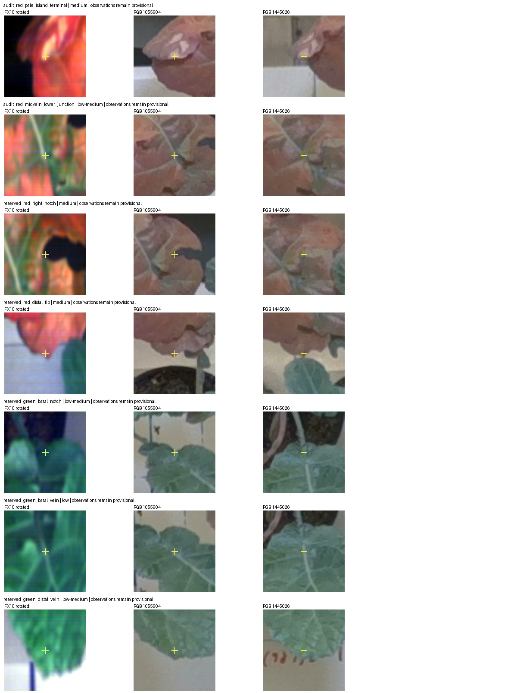
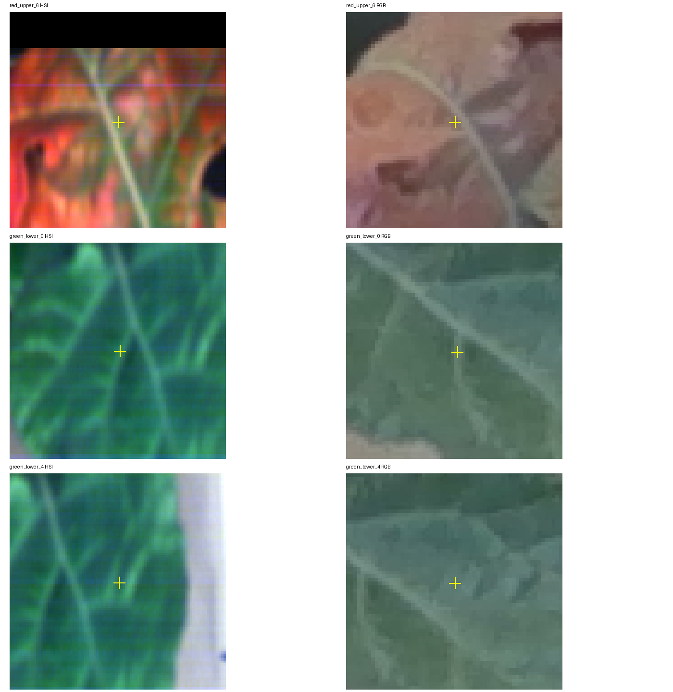

8 October 2026 · FX10 scan 003 and native RGB frame 1055904 · All work is additive and leaves reconstruction, capture code and previous results unchanged.
The three saved spectral locations retain exact D405 source identities and correct metric coordinates. Rotation is an exact pixel permutation. Native RGB reprojection errors are 0.13, 0.71 and 0.94 pixels. The confirmed-board metric conversion changes their image projections by less than 3×10⁻¹³ pixels. No scale or coordinate-frame defect explains the earlier failed comparisons.
Native versus undistorted RGB coordinates differ by 5.79 pixels at the lower green control; the reviewed old affine/sweep code correctly uses native distorted RGB for comparisons, so this potential error was not found in that path. The historical feature detector omits the resize half-pixel correction (at most 0.75 source HSI pixel for the tested scales). That should be corrected in any rerun, but cannot alone explain several-pixel native RGB residuals.
Thirteen fresh landmarks were specified from original gridded source images before evaluating model predictions: five initial checks and eight additional checks across four other Plant 5 leaves. Two additional red-leaf points were supplied as provisional training controls. The 13 checks were withheld from fitting agents until their models were frozen. These are independent of fitting, but they are not independently measured physical ground truth.
Most marks have subjective localization radii of 4–5 HSI pixels and 3 RGB pixels. Several are silhouette tips/notches whose apparent position can depend on view; vein centres are broad. A strict 3-pixel acceptance threshold is tighter than the evidence can establish. Increasing the threshold would not turn these uncertain marks into proof of accurate dense fusion.
The green basal-vein check was labelled low confidence before viewing predictions because repeated forks make material identity uncertain. Its large residual is retained for transparency but must not independently reject a model. The red control pair appears to refer to the same material neighbourhoods, yet descriptor centres are not precise anatomical landmarks. The 8–9 scan-line discrepancy cannot be uniquely attributed to the camera height model.
| Control | Sensor | Native reprojection px | Distortion offset px | Old→metric change px |
|---|---|---|---|---|
| red_upper_2 | fx10 | 0.128 | 1.043 | 1.1e-13 |
| red_upper_6 | fx10 | 0.709 | 1.748 | 0 |
| green_lower_0 | fx10 | 0.938 | 5.791 | 2.3e-13 |
| fx17_track_red_upper_2 | fx17 | 0.128 | 1.043 | 1.1e-13 |
| fx17_track_red_upper_6 | fx17 | 0.709 | 1.748 | 0 |
| fx17_track_green_lower_0 | fx17 | 0.938 | 5.791 | 2.3e-13 |
24 frozen candidates were evaluated against the same 13 proposed landmarks. Five unique landmarks are inside an inlier convex hull (20 candidate/check pairs); eight are outside (32 candidate/check pairs). Out-of-domain marks cannot validate interpolation. All smoothing variants are retained; no winner was selected using these checks.
| Candidate | Reserved landmark | Confidence | In hull | RGB error px |
|---|---|---|---|---|
| green_central_lightglue_outdoor_affine | reserved_central_distal_tip | medium | False | out of domain |
| green_central_lightglue_outdoor_affine | reserved_central_distal_notch | low-medium | False | out of domain |
| green_central_lightglue_outdoor_thin_plate_residual_s1 | reserved_central_distal_tip | medium | False | out of domain |
| green_central_lightglue_outdoor_thin_plate_residual_s1 | reserved_central_distal_notch | low-medium | False | out of domain |
| green_central_lightglue_outdoor_thin_plate_residual_s4 | reserved_central_distal_tip | medium | False | out of domain |
| green_central_lightglue_outdoor_thin_plate_residual_s4 | reserved_central_distal_notch | low-medium | False | out of domain |
| green_central_lightglue_outdoor_thin_plate_residual_s16 | reserved_central_distal_tip | medium | False | out of domain |
| green_central_lightglue_outdoor_thin_plate_residual_s16 | reserved_central_distal_notch | low-medium | False | out of domain |
| green_lower_lightglue_outdoor_projective | reserved_green_basal_notch | low-medium | False | out of domain |
| green_lower_lightglue_outdoor_projective | reserved_green_basal_vein | low | True | 29.17 |
| green_lower_lightglue_outdoor_projective | reserved_green_distal_vein | low-medium | False | out of domain |
| green_lower_lightglue_outdoor_thin_plate_residual_s1 | reserved_green_basal_notch | low-medium | False | out of domain |
| green_lower_lightglue_outdoor_thin_plate_residual_s1 | reserved_green_basal_vein | low | True | 29.79 |
| green_lower_lightglue_outdoor_thin_plate_residual_s1 | reserved_green_distal_vein | low-medium | False | out of domain |
| green_lower_lightglue_outdoor_thin_plate_residual_s4 | reserved_green_basal_notch | low-medium | False | out of domain |
| green_lower_lightglue_outdoor_thin_plate_residual_s4 | reserved_green_basal_vein | low | True | 29.75 |
| green_lower_lightglue_outdoor_thin_plate_residual_s4 | reserved_green_distal_vein | low-medium | False | out of domain |
| green_lower_lightglue_outdoor_thin_plate_residual_s16 | reserved_green_basal_notch | low-medium | False | out of domain |
| green_lower_lightglue_outdoor_thin_plate_residual_s16 | reserved_green_basal_vein | low | True | 29.60 |
| green_lower_lightglue_outdoor_thin_plate_residual_s16 | reserved_green_distal_vein | low-medium | False | out of domain |
| green_upper_lightglue_outdoor_projective | reserved_upper_green_mainfork | medium | True | 0.67 |
| green_upper_lightglue_outdoor_projective | reserved_upper_green_distal_notch | medium | False | out of domain |
| green_upper_lightglue_outdoor_thin_plate_residual_s1 | reserved_upper_green_mainfork | medium | True | 0.86 |
| green_upper_lightglue_outdoor_thin_plate_residual_s1 | reserved_upper_green_distal_notch | medium | False | out of domain |
| green_upper_lightglue_outdoor_thin_plate_residual_s4 | reserved_upper_green_mainfork | medium | True | 0.87 |
| green_upper_lightglue_outdoor_thin_plate_residual_s4 | reserved_upper_green_distal_notch | medium | False | out of domain |
| green_upper_lightglue_outdoor_thin_plate_residual_s16 | reserved_upper_green_mainfork | medium | True | 0.86 |
| green_upper_lightglue_outdoor_thin_plate_residual_s16 | reserved_upper_green_distal_notch | medium | False | out of domain |
| red_lower_lightglue_outdoor_affine | reserved_lower_red_notch | medium | False | out of domain |
| red_lower_lightglue_outdoor_affine | reserved_lower_red_mainfork | low-medium | True | 7.47 |
| red_lower_lightglue_outdoor_thin_plate_residual_s1 | reserved_lower_red_notch | medium | False | out of domain |
| red_lower_lightglue_outdoor_thin_plate_residual_s1 | reserved_lower_red_mainfork | low-medium | True | 7.96 |
| red_lower_lightglue_outdoor_thin_plate_residual_s4 | reserved_lower_red_notch | medium | False | out of domain |
| red_lower_lightglue_outdoor_thin_plate_residual_s4 | reserved_lower_red_mainfork | low-medium | True | 8.02 |
| red_lower_lightglue_outdoor_thin_plate_residual_s16 | reserved_lower_red_notch | medium | False | out of domain |
| red_lower_lightglue_outdoor_thin_plate_residual_s16 | reserved_lower_red_mainfork | low-medium | True | 8.12 |
| red_upper_lightglue_outdoor_projective | reserved_red_right_notch | medium | True | 2.29 |
| red_upper_lightglue_outdoor_projective | reserved_red_distal_tip | medium | False | out of domain |
| red_upper_lightglue_outdoor_thin_plate_residual_s1 | reserved_red_right_notch | medium | True | 2.05 |
| red_upper_lightglue_outdoor_thin_plate_residual_s1 | reserved_red_distal_tip | medium | False | out of domain |
| red_upper_lightglue_outdoor_thin_plate_residual_s4 | reserved_red_right_notch | medium | True | 2.01 |
| red_upper_lightglue_outdoor_thin_plate_residual_s4 | reserved_red_distal_tip | medium | False | out of domain |
| red_upper_lightglue_outdoor_thin_plate_residual_s16 | reserved_red_right_notch | medium | True | 1.90 |
| red_upper_lightglue_outdoor_thin_plate_residual_s16 | reserved_red_distal_tip | medium | False | out of domain |
| variegated_right_lightglue_outdoor_affine | reserved_variegated_basal_notch | medium | True | 18.30 |
| variegated_right_lightglue_outdoor_affine | reserved_variegated_curled_tip | medium | False | out of domain |
| variegated_right_lightglue_outdoor_thin_plate_residual_s1 | reserved_variegated_basal_notch | medium | True | 18.97 |
| variegated_right_lightglue_outdoor_thin_plate_residual_s1 | reserved_variegated_curled_tip | medium | False | out of domain |
| variegated_right_lightglue_outdoor_thin_plate_residual_s4 | reserved_variegated_basal_notch | medium | True | 19.00 |
| variegated_right_lightglue_outdoor_thin_plate_residual_s4 | reserved_variegated_curled_tip | medium | False | out of domain |
| variegated_right_lightglue_outdoor_thin_plate_residual_s16 | reserved_variegated_basal_notch | medium | True | 19.03 |
| variegated_right_lightglue_outdoor_thin_plate_residual_s16 | reserved_variegated_curled_tip | medium | False | out of domain |
The upper-green main fork agrees within 0.67–0.87 RGB pixels and the upper-red notch within 1.90–2.29 pixels across their four variants. These are local consistency observations. The lower-red fork gives 7.47–8.12 pixels and the variegated notch 18.30–19.03 pixels. Green-central has no fresh in-hull check. This is not sufficient spatial coverage to certify a whole-leaf or whole-plant dense map.
| Frozen candidate | Landmark | Confidence | RGB error px | Subjective bound px |
|---|---|---|---|---|
| primary_mind_rgb | reserved_green_basal_notch | low-medium | 2.03 | 7.85 |
| primary_mind_rgb | reserved_green_basal_vein | low | 21.32 | 7.90 |
| primary_mind_rgb | reserved_green_distal_vein | low-medium | 1.95 | 7.89 |
| pyramid_mind_rgb | reserved_green_basal_notch | low-medium | 11.88 | 8.19 |
| pyramid_mind_rgb | reserved_green_basal_vein | low | 29.23 | 8.43 |
| pyramid_mind_rgb | reserved_green_distal_vein | low-medium | 11.59 | 7.96 |
| mutual_information_affine | reserved_green_basal_notch | low-medium | 25.03 | 8.16 |
| mutual_information_affine | reserved_green_basal_vein | low | 38.87 | 8.15 |
| mutual_information_affine | reserved_green_distal_vein | low-medium | 21.59 | 8.16 |
| pyramid_mind_foreground | reserved_green_basal_notch | low-medium | 9.77 | 6.74 |
| pyramid_mind_foreground | reserved_green_basal_vein | low | 18.92 | 7.37 |
| pyramid_mind_foreground | reserved_green_distal_vein | low-medium | 12.69 | 7.15 |
The primary MIND result remains close to its manual initialization; its basal-notch and distal-vein errors are 2.03 and 1.95 pixels. More flexible variants move these checks farther away. The subjective bound is an uncertainty sensitivity calculation, not a statistical confidence interval or an accuracy certification.
Yellow crosses mark the source feature and the selected current metric point projected into two RGB views. This checks the 3D association, while cross-modality material identity remains conditional.

Ten further interior feature attempts were frozen in a second round and scored against the unchanged learned maps. Leaf selection followed the first-round evidence, so these are adaptive exploratory checks. No coordinates were adjusted after scoring; ambiguous attempts are retained.
| Leaf | Interior evidence | Meaning |
|---|---|---|
| Upper green | Three in-hull checks across both rounds;0.67–7.16RGBpixels across frozen variants. | Approximate local correspondence supported; localization and map variation remain severalpixels. |
| Upper red | Four in-hull checks;1.90–5.60RGBpixels, including one low-confidence mark. | Local mapping is plausible, without whole-leaf or subpixel accuracy proof. |
| Lower green | One new medium-confidence fork7.92–8.69RGBpixels; other interior attempts are more ambiguous. | Spatial uncertainty remains. The old lateral control cannot alone decide validity. |
green_lower_4 was explicitly recorded as not accepted, not independent and not recommended for the sparse join. It repeated in five grayscale feature configurations, compared with25 configurations across three channels for green_lower_0. The source crops do not establish a unique precise lateral-vein centre. A wrong nearby branch or modality-dependent centroid remains plausible.
The earlier7–8pixel discrepancy therefore measures disagreement with uncertain selected controls; it does not establish an independent physical error of exactly that size. This changes the strength of a decisive-failure statement. It does not establish that the older map is accurate. Neither control was moved to improve a result.

Six physical camera candidates and three silhouette candidates were frozen before reserved scores were released. The physical primary gives4.87,8.84,8.83and5.94HSIpixels on the four checks above lowconfidence; the primary silhouette model gives5.35,6.52,8.62and19.85pixels. The ambiguous basal-vein attempt is retained separately. No model consistently resolves the correspondence uncertainty; good colour overlap is not proof that the same material pixels align.